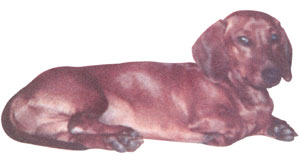
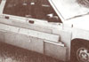

My miniature dachshund, Scruffy, who loves all animals, but is not a good judge of character, recently had a very smelly encounter with a skunk. Arriving at my door after playing in our orange grove, Scruffy looked miserable and his odor was completely unbearable. My wife and kids shouted, "Wash him with tomato juice!" After enduring a tomato juice bath, Scruffy was still putrid. My wife shouted, "You're a chemist. Do something!" Fortunately for Scruffy and my family, crisis management and industrial chemistry are my specialties. I remembered reading a news piece by Mr. Paul Krebaum in a recent issue of Chemical Engineering News (October 1993) about a colleague of his who had developed an effective homemade nontoxic pet "deskunker" which totally removed the scent from his cat. After frantically searching for the magazine, I finally found the recipe and followed the easy directions.
I dumped baking soda into household hydrogen peroxide and added a dash of liquid soap. After donning a pair of rubber gloves, I sprayed Scruffy with the concoction and rubbed it into the mortified dog's fur. It worked within minutes, and our joyful pet, formerly banished to the garage, was returned to the house odor free.
Nature has equipped the skunk with a powerful chemical-warfare system. The little terror can spray its molester with an aerosol mist from its anal glands containing very smelly sulfur compounds called mercaptans. Anyone who has lived near a coral fired electric plant or a smoke-belching chemical factory has probably smelled sulfurous odors. As the Environmental Protection Agency frowns on these noxious emissions, industrial chemists and engineers have perfected numerous "scrubbing" solutions and devices for ridding the air of such toxic fumes. Industry has used caustic hydrogen peroxide solutions to decompose its sulfurous wastes into harmless and odorless by-products. By substituting baking soda for lye and reducing the peroxide concentration, pet owners can have a safe remedy if their dog or cat should have an unfortunate encounter.
My vet has assured me that this remedy is nontoxic when used externally on either a dog or a cat. Of course, the animal must not be allowed to drink the solution and the owner must avoid spraying the pet's eyes and mouth with it. The solution should be prepared fresh and not stored.
Ingredients:
1 quart 3% hydrogen peroxide (from drug store)
1/4 cup baking soda
1 teaspoon liquid soap
Using a two-quart bowl and spoon, dissolve the baking soda in the peroxide. Add the soap, mix, and pour into a spray bottle. Liberally apply mixture to pet's fur, avoiding, the eyes and mouth, and rub it in well. Wait 15 minutes and then completely rinse the animal with tap water. One treatment is usually satisfactory. This rinse will also safely deodorize your car as well as afflicted people.
-Marvin M. Kaplan
Casselberry, Ff.
Growing violets inside is rewarding because they flower much of the year. However, their leaves do get dusty, which not only looks unsightly but isn't particularly good for the flowers. To take care of this problem, I use a vacuum to remove the dust. just use the attachment arm with a soft brush at the end to gently extract the dust. You may also use something softer such as a make-up brush if you prefer.
-Julie Ketcham
Crested Butte, CO
Here's a good use for used car tires. Cut through an old tire with a hacksaw. Slip it around a young sapling. Spread mulch between the tire and sapling. The tire will hold the nutrient-rich mulch near the tree's base. The tire will also act as a guard, preventing lawn mower cuts to the developing tree. Once the tree is mature enough, simply remove the tire.
-Mitch Culver
Boulder City, NV
Taking the stink out of skunk encounters.
My neighbor Wanda, a native of Kansas, is an herbalist and a wonderful cook. When her husband passed away, she decided that gardening would be too much for her in her seventies without him, so she gave me all of her herbs-French tarragon, French thyme, alba thyme, creeping oregano-some lovely rare ones. Among the herbs she gave me was this old-time herbal insecticide recipe that she brought with her from Kansas. Wanda warned me that it wouldn't work on every type of bug, like cabbage moths and worms, but it does keep away aphids and can well deter Japanese beetles. She said that it was up to the user to experiment, so I gave it a whirl. Last spring it got rid of an aphid infestation on my chrysanthemums and dusty millers. Last fall it rid aphids from my spinach. "The trick," she said, "is to spray it every morning for a week to two weeks until you start to see results, and then spray once a week to keep the bugs away."
Wanda's Bug Spray
1 quart cool tap water
4 green stalks and bulbs of winter onions
4 cloves of garlic
2 tablespoons red pepper flakes
6 tablespoons dishwashing liquid
2 1-quart canning jars with screw-on lids
1 cup strainer (with a screen sieve)
1 plastic water mister
Place peeled and chopped onion and garlic in a jar. Add red pepper and dishwashing liquid, and fill to the rim with water. Tighten the lid and shake vigorously. Place your concoction in the sun to brew for a few days. Store in the shade. When you need it, strain the liquid into your second jar or your mister. Add water to your old batch to replenish what you've taken. Eventually, compost what remains and start fresh.
-Janet Guardiani
Cleveland, TN
Got some lumber to haul a short ways and only a mini-car to drive? Here's a way to move a lot of lumber without crushing the roof or spending hours tying it down.
Open both passenger-side doors and tie a rope to the upper front door hinge and the rear door latch. Shut the doors and bring the ropes out the passenger-side window so they lie on the ground, running away from the car.
Stack the lumber on top of the ropes, with the biggest, flattest piece on top. Now wrap the rope ends around the center window post and pull, tilting the lumber stack up against the side of the car. Keep pulling until the lumber is no lower than the side of the car, and tie off the ropes around the window center post. Adjust the lumber so it doesn't rub on the front wheel when the steering wheel is turned to the left, and you're ready to go!
-Don Fallick
Salt Lake City, UT
My husband loves to cook over an open fire. Even in the dead of winter, I come home from work and discover him standing in the snow by our fire pit, leaning over some red mesquite coals, grilling our dinner. I can't complain; he cooks me wonderful dinners, but nearly all our pans are blackened with smoke. After experimenting with various methods to prevent this, he finally discovered that smearing hard soap all over the pan keeps it from turning black. Try this when you go camping.
-Catlyn Conway
Missoula, MT
We've all managed to discover a few practical, time-tested solutions to the frustrating problems of everyday life. Send your tips to: "Country Lore" c/o M OTHER E ARTH N EWS , P.O. Box 129, Arden, N. C. 28704, or write to us via E-mail at MEarthNews@aol.com. Please include your phone number and a photo. If we use your letter, we'll be happy to send you a M OTHER E ARTH N EWS T-shirt!
|
 Mr.Kaplan's dachshund, Scuffy, now blissfully odor-free. |
|
|
|
 |
|
|